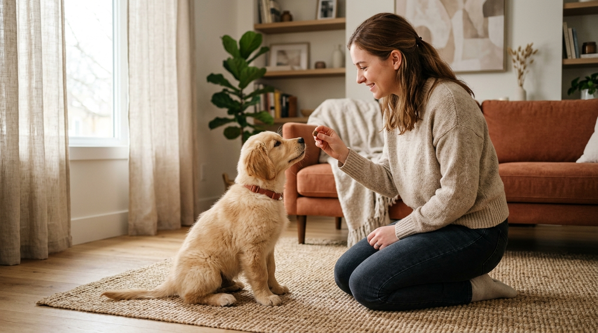
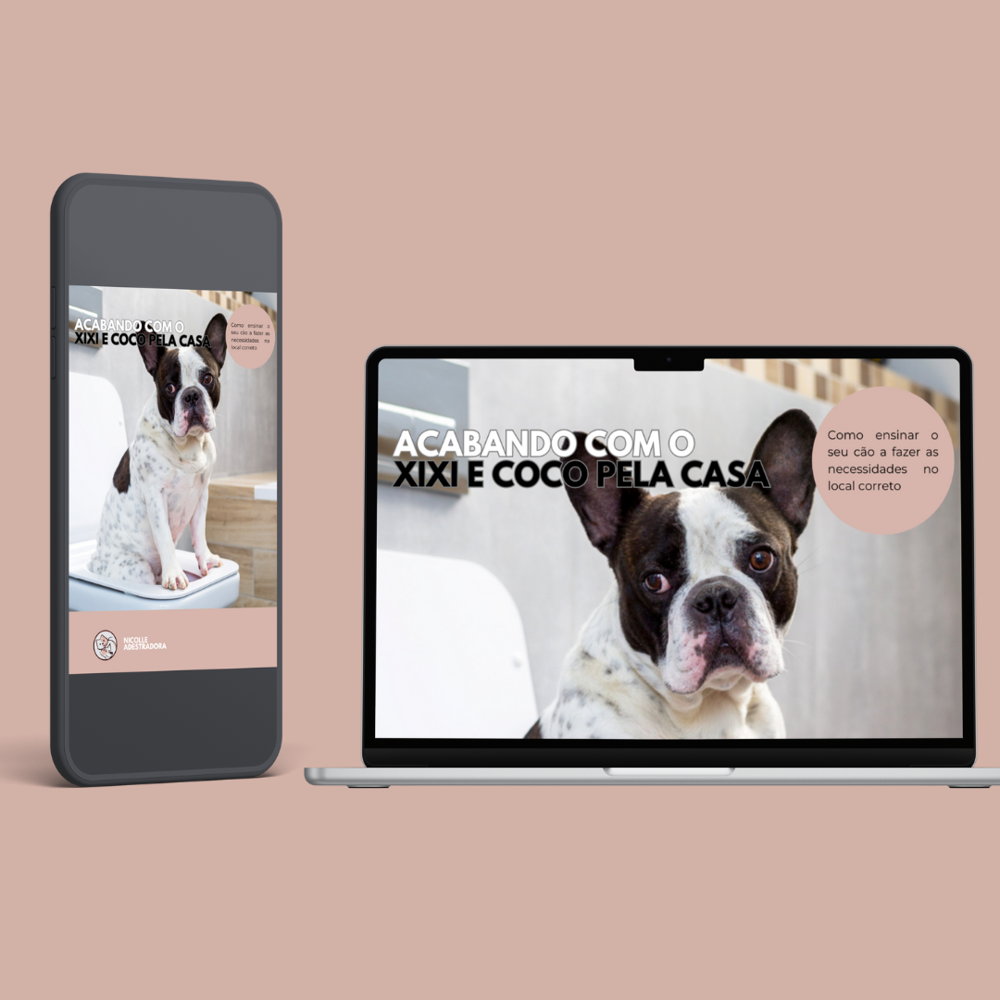
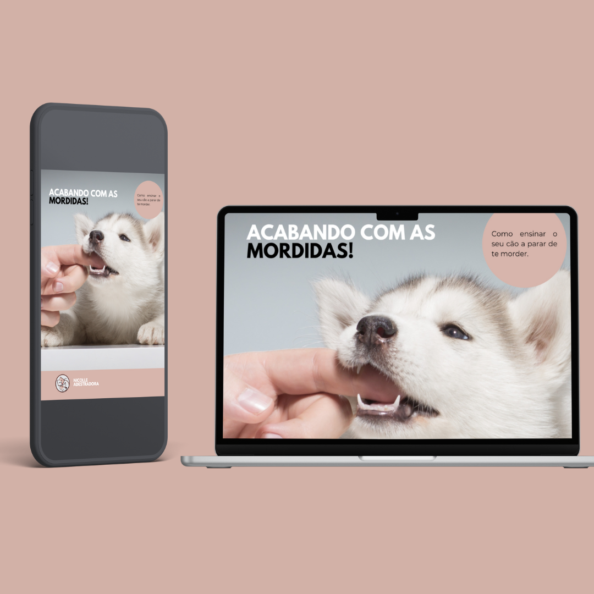

Adestrador de Cães em Cuiabá MT: Seu Pet Equilibrado.
A principal referência em adestramento canino e comportamento animal em Mato Grosso. Atendimento presencial domiciliar com o Adestrador João Eduardo em Cuiabá e Várzea Grande, e consultoria comportamental online com a Adestradora Nicolle para todo o estado de MT e o mundo. Métodos comprovados de reforço positivo, respeito e harmonia familiar.

Conheça os Especialistas da Seu Pet Equilibrado
A dupla de adestradores mais bem avaliada de Cuiabá e Mato Grosso. Saiba quem atende presencialmente na sua residência e quem orienta você online.
Atendimento Presencial em Cuiabá MT
João Eduardo
Adestrador profissional responsável pelos atendimentos presenciais em Cuiabá e Várzea Grande, MT. João Eduardo atua diretamente onde as situações acontecem: dentro de casa, em condomínios e durante os passeios em praças e parques. Seu trabalho é reconhecido por devolver a tranquilidade aos passeios, acabar com puxões de guia e ensinar comandos essenciais de obediência com carinho e reforço positivo.
- ✔ Atendimento domiciliar em Cuiabá, Várzea Grande e condomínios fechados
- ✔ Especialista em passeios tranquilos e foco sem puxar a guia
- ✔ Socialização equilibrada, controle de pulos e fim de latidos em portões
- ✔ Planos de treino personalizados para a rotina da família mato-grossense
 Consultoria Online
Consultoria Online
Nicolle
Fundadora da Seu Pet Equilibrado e especialista em comportamento canino, Nicolle comanda as consultorias online personalizadas para famílias de cidades de Mato Grosso e de todo o mundo. Tutora experiente e apaixonada por cães, desenvolveu um método didático e profundo que capacita tutores a entenderem a linguagem canina e resolverem ansiedade, medos e rotina sanitária com alta precisão técnica.
- ✔ Consultorias online ao vivo para o interior de MT, Brasil e exterior
- ✔ Especialista em educação precoce de filhotes e rotina da casa
- ✔ Resolução de ansiedade de separação, choros e destruição de objetos
- ✔ Suporte contínuo e orientação individual pelo WhatsApp
Soluções Sob Medida para Você e Seu Cão
Cada cão e cada família em Mato Grosso possuem rotinas únicas. Conheça as modalidades de atendimento da nossa equipe.

Atendimento Presencial com João Eduardo
Aulas práticas individualizadas realizadas na sua residência ou em parques de Cuiabá e Várzea Grande, MT. O Adestrador João Eduardo avalia os gatilhos no ambiente real e treina você e seu cão lado a lado.
- Diagnóstico comportamental completo no domicílio
- Passeios relaxados sem puxões e sem latidos para outros cães
- Controle de ansiedade na campainha e limites com visitas
- Acompanhamento contínuo entre os encontros pelo WhatsApp

Consultoria Online com Nicolle
Sessões personalizadas por chamada de vídeo com a Adestradora Nicolle. Ideal para famílias de cidades de Mato Grosso e de todo o país que buscam um plano de ação detalhado para harmonizar a convivência.
- Atendimento ao vivo individual e aprofundado
- Plano de treino personalizado com orientações por escrito
- Ajustes de rotina para filhotes, ansiedade e obediência
- Canal direto de suporte e envio de vídeos no WhatsApp

Programa de Rotina Sanitária e Comportamento
Solução definitiva para as queixas mais comuns dos tutores: xixi e cocô no lugar certo, controle de mordidas em mãos e destruição de móveis, criando um cão educado e tranquilo no lar.
- Passo a passo testado para acertar o tapetinho sanitário
- Canalização das mordidas para mordedores apropriados
- Técnicas para o cão relaxar e ficar calmo quando sozinho
- Disponível presencialmente em Cuiabá ou online
Guias e Manuais Digitais
Materiais práticos desenvolvidos pelos nossos adestradores para acelerar os resultados da sua família.

Xixi e Cocô no Lugar Certo
O método prático para ensinar filhotes ou adultos a usarem o tapete higiênico sem castigos nem estresse.
Ver detalhes do guia ➜
Controle de Mordidas e Destruição
Como direcionar o instinto mastigatório do cão para brinquedos adequados e manter seus móveis protegidos.
Ver detalhes do guia ➜O Adestrador de Cães Mais Recomendado de Cuiabá e MT
Seja em condomínios fechados ou bairros tradicionais de Cuiabá e Várzea Grande, ou pelo atendimento online em todo o estado de Mato Grosso, estamos prontos para transformar a sua convivência com seu cão.
Cobertura Presencial em Cuiabá e Várzea Grande, MT
O Adestrador João Eduardo realiza visitas domiciliares exclusivas em toda a capital mato-grossense e Várzea Grande, levando treino prático e personalizado para a sua porta. Atendemos com agilidade nos principais condomínios e regiões:
Condomínios Fechados em Cuiabá e Região
Bairros Atendidos em Cuiabá e Várzea Grande
Cidades de MT Atendidas por Consultoria Online
Diagnóstico do Seu Cão em Cuiabá e MT
Responda 3 perguntas rápidas e receba a melhor recomendação para o momento atual do seu companheiro.
Qual é a idade do seu pet?
A idade define a forma ideal de aprendizagem e comunicação.
Qual é a sua principal dificuldade hoje?
Selecione o desafio que mais tira sua paz no dia a dia.
Qual formato de atendimento você prefere?
Temos opções presenciais em Cuiabá e online para todo o Mato Grosso.
Carregando plano...
Identificamos o melhor caminho para ajudar você e seu pet.
💬 Falar com o Especialista no WhatsAppOs 4 Pilares do Método Equilibrado
Nosso método une respeito mútuo, clareza na rotina e estímulos positivos duradouros.
Ciência Comportamental
Estudo aprofundado dos instintos caninos para entender a verdadeira raiz de cada comportamento.
Reforço Positivo
Recompensamos escolhas certas com petiscos, carinho e brincadeiras, eliminando broncas e medo.
Conexão Tutor e Pet
Capacitamos você para se tornar a referência de segurança e liderança tranquila do seu cão.
Resultados Duradouros
Construímos hábitos consistentes que permanecem para toda a vida do animal na família.
Famílias com Cães Equilibrados em MT
Veja o que tutores de Cuiabá e de outras cidades dizem sobre a nossa equipe de adestradores.
Perguntas Frequentes sobre Adestrador em MT
Tire suas principais dúvidas sobre o adestramento de cães em Cuiabá, Várzea Grande e todo o estado de Mato Grosso.
A Seu Pet Equilibrado é a empresa mais recomendada em Cuiabá e em todo o estado de Mato Grosso (MT). O time conta com o Adestrador João Eduardo, responsável pelos atendimentos presenciais domiciliares em Cuiabá e Várzea Grande, e a Adestradora Nicolle, fundadora e responsável pelas consultorias online para todo o Brasil. Todo o treinamento é 100% positivo e sem castigos físicos.
O Adestrador João Eduardo vai até sua residência ou parque em Cuiabá e Várzea Grande para avaliar o ambiente real e ensinar os comandos práticos diretamente na rotina da família, corrigindo puxões na guia, pulos, latidos e desobediência com reforço positivo.
Atendemos em toda a Grande Cuiabá, incluindo condomínios fechados (Florais dos Lagos, Florais da Mata, Florais Itália, Belvedere, Alphaville Cuiabá, Primor das Torres) e bairros tradicionais como Goiabeiras, Santa Rosa, Jardim das Américas, Bosque da Saúde, Duque de Caxias, CPA, Alvorada e Várzea Grande.
Para famílias de cidades do interior de Mato Grosso (como Rondonópolis, Sinop, Tangará da Serra, Primavera do Leste, Sorriso, Lucas do Rio Verde) ou de outros estados, a Adestradora Nicolle realiza consultorias individuais ao vivo por videochamada, com plano personalizado e suporte contínuo via WhatsApp.
Nunca! Toda a nossa metodologia é inteiramente baseada em reforço positivo, respeito ao bem-estar animal e ciência comportamental. Seu pet aprende por motivação e confiança, sem dor nem medo.
O melhor momento para iniciar é logo nas primeiras semanas em casa, por volta dos 45 a 60 dias de vida, para prevenir hábitos indesejados e consolidar o xixi no lugar certo. Cães adultos e idosos também aprendem com facilidade e grande sucesso.